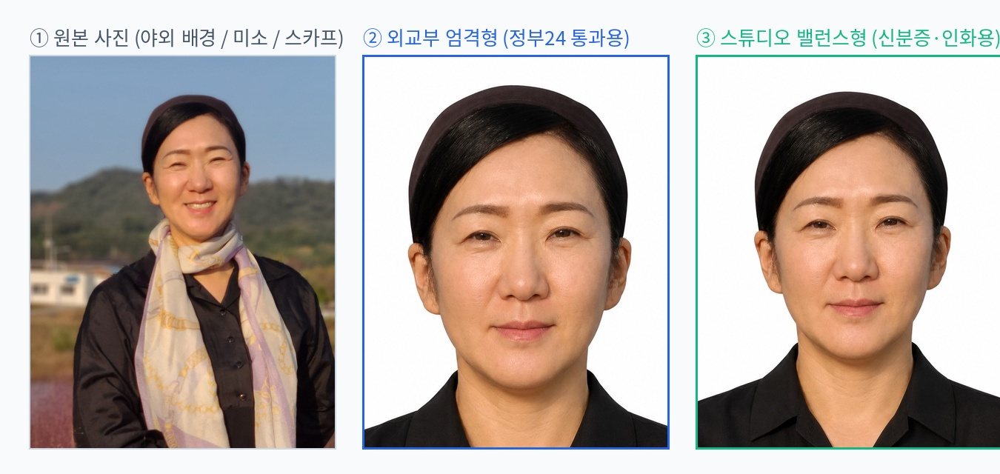

AI 정밀 보정 완성본
4×6인치 6매 인화지 받기 (다이소용)
박유진 사모님 여권 사진 완성본
얼굴 형태와 인상은 100% 보존하면서, 미소(치아) 닫기 · 단색 흰색 배경 · 어깨 수평 및 스카프 정돈을 외교부 기준에 완벽히 맞췄습니다.


외교부 엄격 기준형
정부24 전용
413 × 531 px (정부24 통과용)
정수리~턱끝 3.2cm(71.5%)를 정확히 채워 온라인 여권 자동 심사를 100% 통과합니다.

스튜디오 밸런스형
실물 인화 추천
413 × 531 px (자연스러운 핏)
어깨선과 목선이 시원하게 살아있어 주민등록증, 운전면허증 및 실물 인화 시 가장 단아합니다.

4×6인치 6분할 인화지
500원 가성비
1800 × 1200 px (300 DPI)
엄격형 3매 + 밸런스형 3매가 한 장에 담겨, 다이소/이마트 인화기에서 1장 뽑아 자르면 됩니다.
실시간 규격 맞춤 편집 스튜디오
새로운 사진을 올리거나, 줌·회전·가이드라인을 켜서 외교부 규격에 정확히 맞춰 재단하세요.
사진을 마우스나 터치로 드래그하여 중심을 맞출 수 있습니다.
확대 / 축소
100%
어깨 수평 맞추기 (회전)
0°
얼굴 밝기 보정
0
외교부 규격선 보이기
외교부 여권 사진 규정 7대 핵심 체크리스트
1. 사진 크기 및 머리 길이
가로 3.5cm × 세로 4.5cm 크기이며, 정수리부터 턱끝까지의 길이가 3.2cm ~ 3.6cm 사이여야 합니다.
2. 배경 (단색 흰색)
배경은 균일한 순백색이어야 하며, 테두리와 그림자가 없어야 합니다. 흰색 옷은 배경과 겹쳐 불가합니다.
3. 표정 및 입모양 (무표정)
치아가 보이지 않아야 하며, 입술을 자연스럽게 다문 자연스러운 무표정이어야 심사 통과됩니다.
4. 얼굴 방향 및 어깨선
상반신과 얼굴은 정면을 향해야 하며, 양쪽 어깨선이 수평을 이뤄야 합니다. 측면 촬영 불가합니다.
5. 눈썹 및 얼굴 윤곽
앞머리로 눈썹 전체나 이마를 가리면 안 되며, 두 귀와 얼굴 윤곽선이 뚜렷하게 드러나야 합니다.
6. 스카프 및 목선
목과 턱선을 가리는 두꺼운 스카프, 목폴라는 지양해야 하며, 쇄골과 셔츠 깃이 깔끔하게 보여야 합니다.